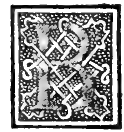

Chapter XIX: Cramped Sites, Continuous Proportion, and Piero della Francesca¶
How the Architect Must Govern Himself in Cramped and Irregular Sites, Why Continuous Geometric Proportion Is Wider Than Discrete Numerical Proportion, and Praise of Master Piero della Francesca.

An architect must be exceedingly prudent in advising patrons on buildings and in laying out their models (in la puntatione de’ lor modelli), lest he lead his patron into useless and ruinous expense.
Rule for Cramped and Irregular Sites (Luoghi Angusti)
As our Vitruvius warns (V.6.7, VI.2), it often happens that the narrowness or irregularity of the site (l’angustia e strettezza del luogo) prevents the architect from executing all the theoretical symmetries that belong to a free-standing temple or palace.
Whenever you are thus constrained by an irregular site, hold fast as closely as possible to the Square and the Circle (tenerse al quadro e al tondo)—the two primary figures born of the straight line and the curved line!
If the site does not allow a complete square or complete circle, take known aliquot parts of them—such as a half (\(\frac{1}{2}\)), a third (\(\frac{1}{3}\)), two-thirds (\(\frac{2}{3}\)), three-fourths (\(\frac{3}{4}\)), four-fifths (\(\frac{4}{5}\)), and so on—of their perimeter or diameter, proportioning them in rational numbers wherever possible.
Where Irrationality Enters (Continuous vs. Discrete Quantity, Euclid Book V): And where you are compelled by irrationality (constretti dala irrationalita)—as in the ratio between the diagonal of a square and its side (\(\sqrt{2} : 1\)), or in our Divine Proportion (\(\frac{\sqrt{5}+1}{2} : 1\))—mark their exact bounds geometrically in lines using your try-square (*:term:`squadra <norma>`*) and compass (*sexto*)! For even though such ratios can never be named by rational numbers, nothing ever prevents them from being assigned with absolute precision by straight lines and plane surfaces! This is because, as we proved in Chapter VI of Part I, proportion is far wider and more comprehensive in continuous quantity (geometry) than in discrete quantity (arithmetic): the arithmetician considers only rationality, whereas the geometer considers both rationality and irrationality, as our Euclid sets forth in full in the fifth book (and tenth book) of his Elements, and as we explained in theory and practice in our great work, Summa de Arithmetica, Geometria, Proportioni e Proportionalita (Distinction VI, Tractate 1, Article 1, printed at Venice in 1494 and dedicated to the Magnanimous Duke of Urbino), to which I refer you for every need.
Ancient Bronze Inscriptions in Rome and Final Tribute to Master Piero della Francesca of Borgo Sansepolcro
You also have in this book the Ancient Roman Alphabet (Appendix I), by which you may adorn your sepulchres, portals, and friezes—just as the ancient Romans carved their monumental letters and inlaid them with gilded bronze fastened with dowels into the stone sockets, as their surviving traces on the Campidoglio (Capitol) and at the Palace of Nero in Rome still make manifest! And let not scribes and illuminators complain that I have published their art: I have placed the square and the circle before their eyes solely to show that everything in human artifice (*:term:`in agibilibus <in-agibilibus>`*) proceeds from the mathematical disciplines!
Finally, I earnestly beg you all to confer together like good brothers (a uso de bon fratelli) for the fuller elucidation of these arts—for it is easy to add to things already discovered (facile est inventis addere)—both for your own honor and for the glory of our native town of Borgo Sansepolcro, which, though small in territory, is populous and has always brought forth men of supreme genius, both in arms (as we recounted in the Dedication) and in the mathematical sciences and arts!
And in the mathematical arts this is made manifest to the whole world by the Monarch of Painting and Architecture in our days, Master Piero della Francesca (el Monarcha ali dì nostri della Pictura e Architectura, Maestro Pietro deli Franceschi):
Both with his brush (con suo pennello), while his eyesight lasted—as appears in Urbino, Bologna, Ferrara, Rimini, Ancona, and in our own town of Borgo Sansepolcro, on wall (fresco) and panel, in oil and tempera/gouache (in muro e taula, a oglio e guazzo), and above all in the city of Arezzo in the Great Chapel of the Tribune of the High Altar [the Legend of the True Cross in the Basilica of San Francesco], one of the worthiest and most universally praised works in all of Italy!
And with his pen, when he composed his sublime Book on Perspective (*:cite:`De Prospectiva Pingendi <piero:prospectiva>`*), which is preserved in the renowned Library of our Most Illustrious Duke of Urbino!
Strive, therefore, my beloved fellow citizens, to do the like!